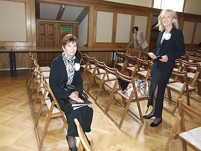

A tymczasem w Cameracie...
.
2013-09-25
Jest to spotkanie z serii: „Wspólne biografie” - „Władysław Jastrzębski (1906- 1995) - z Bolesławia do Wieliczki” i „Ojciec i syn w rodzinie” - „Władysław, Jacek, Tomasz Jastrzębscy”.Spotykamy się pół godziny przed rozpoczęciem.

Musimy się rozśpiewać, przy fortepianie p. Agnieszka Korczyńska.
Tymczasem trwają przygotowania do spotkania, w którym głównym bohaterem będzie nasz bas Jacek Jastrzębski i jego rodzina.
Krótka próba i zdjęcie pamiątkowe z p. Jadwigą Dudą.
Jesteśmy gotowi do krótkiego koncertu.
Sala wypełnia się słuchaczami, zaczyna się spotkanie. Słowo wprowadzające – Jadwiga Duda.

© Stowarzyszenie Muzyczne Chór Camerata Wieliczka
Projekt i wykonanie:  Prowadzenie strony: Małgorzata Wysocka-Cebula
Prowadzenie strony: Małgorzata Wysocka-Cebula